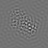
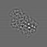
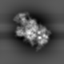
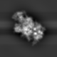

最小
最大
平均値
標準偏差
標準誤差
0
65.5929
5.45036
12.3043
0.153804
| オプション | 必須項目/選択項目 | 説明 | デフォルト |
|---|---|---|---|
| -i | 必須 | 入力ファイル設定 | NULL |
| -o | 必須 | 出力ファイル設定 | NULL |
| -m | 選択 | モードを設定 | 0 |
| -hvl | 選択 | 空間周波数の減衰が最大値の半分になる値の最小値を設定 | 1.0 |
| -hvh | 選択 | 空間周波数の減衰が最大値の半分になる値の最大値を設定 | 1.0 |
| -wl | 選択 | 空間周波数cos関数の幅の最小値を設定 | 1.0 |
| -wh | 選択 | 空間周波数cos関数の幅の最大値を設定 | 1.0 |
| -h | 選択 | ヘルプを表示 |
| モード | 説明 |
|---|---|
| 1 | ステップフィルタ・・・-hvl,-hvhを設定すること |
| 2 | cosフィルタ・・・-hvl,-hvh,-wl,-whを設定すること |
| 3 | expフィルタ・・・-hvl,-hvh,-wl,-whを設定すること |
|
最小 |
0 |
 |
最小 |
0 |
-hvl=0.1,-hvh=1に設定 −−−−−−＞ |
 | 最小 |
-9.27378 |
| -hvl=0.01,-hvh=1に設定 −−−−−−＞ |
最小 |
-17.8289 |
最小 |
0 |
-hvl=0.1,-hvh=1,wl=0.1,wh=1に設定 −−−−−−＞ |
 | 最小 |
-8.55029 |
|
| -hvl=0.01,-hvh=1,wl=0.1,wh=1に設定 −−−−−−＞ |
最小 |
-9.64259 |
||||
| -hvl=0.01,-hvh=1,wl=0.01,wh=1に設定 −−−−−−＞ |
 | 最小 |
-17.8337 |
最小 |
-1.01675 |
-hvl=0.1,-hvh=1,wl=0.1,wh=1に設定 −−−−−−＞ |
最小 |
-2.2918 |
||
| -hvl=0.01,-hvh=1,wl=0.1,wh=1に設定 −−−−−−＞ |
最小 |
-4.20068 |
||||
| -hvl=0.01,-hvh=1,wl=0.01,wh=1に設定 −−−−−−＞ |
 | 最小 |
-12.4598 |